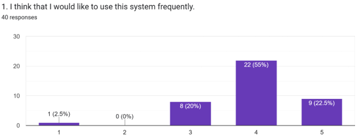
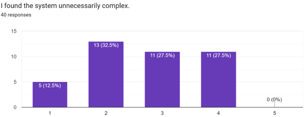
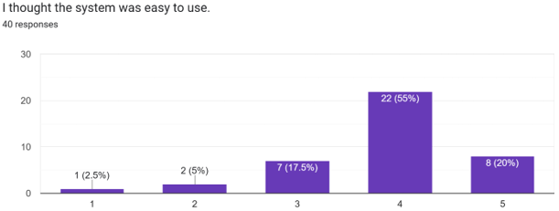
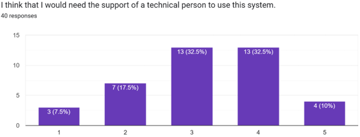
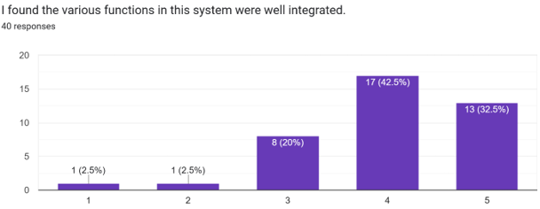
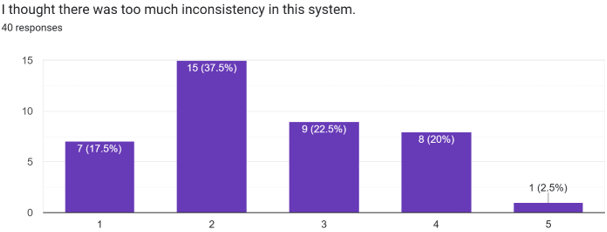
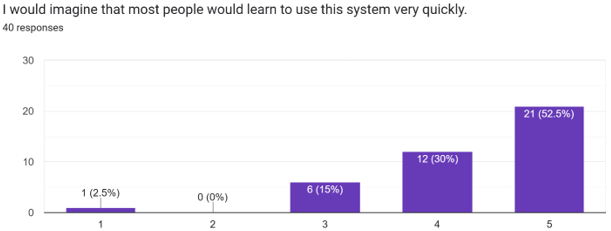
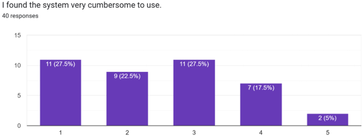
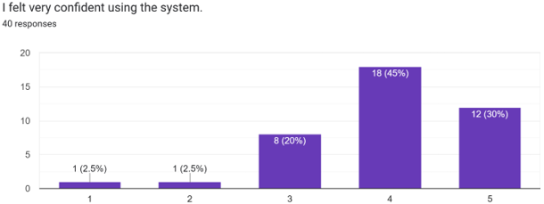
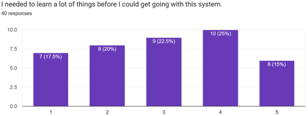

Results, Discussion, and Recommendations
This report shows the feedback and scores from 40 students who tested our new mobile student task management app. It highlights what works well and what needs to be fixed.
We conducted a hands-on usability test for our mobile app prototype with 40 active 3rd-year Bachelor of Science in Entrepreneurship student users from Partido State University, who represent our exact target audience because they manage heavy daily workloads, financial business plans, and strict project deadlines. During these testing sessions, each participant loaded the prototype onto a smartphone to naturally complete core activities like viewing the calendar, adding tasks, and checking the dashboard before immediately filling out the standard 10-item System Usability Scale questionnaire. Based on the data gathered, the app received high praise with 75% of users finding it easy to use and 77.5% wanting to use it frequently, which brings the cumulative feedback to a final average score of 76.6 out of 100—meaning the app officially achieves a Grade B, a "Good" rating, and lands safely in the "Acceptable" range for everyday student use.
Results and Discussion for Each Chart

More than 70% of the students said they would use this app often. This shows that keeping all school deadlines in one central place is highly useful for students and will keep them coming back to the app.

Most students gave this a low score, which is a good thing! It means the app is not confusing or cluttered. However, a few students felt that advanced settings could be simplified to make it even cleaner.

A huge majority (82.5%) agreed that the app is easy to use. This proves that the menus and buttons are placed logically, allowing students to check their tasks without getting stuck.

Almost all students agreed they do not need any technical help or training to use this app. The setup is straightforward and works just like other modern mobile apps they already know how to use.

This item got strong positive scores. Students loved that their schedules, calendars, and tasks all work together inside one single app. This saves them from constantly switching between different apps.

Students reported that the app feels consistent. The fonts, text spacing, button shapes, and colors look uniform across every page, which makes navigation feel smooth and familiar.

Most users agreed that any normal student could learn to use this tool almost instantly. There is no complicated learning curve required to open the dashboard and update a task.

Around 15% of users felt that some small parts of the app were slightly awkward or clumsy to tap. This shows we need to adjust a few buttons and sub-menus so they are easier to select on mobile screens.

Students felt highly confident while testing the app. They felt in complete control when adding new assignments, editing tasks, and updating their study progress timelines.

A few students noted that having to manually fill out account setup forms at the very beginning slows down the app. This tells us we should make the setup process automated and faster.
To take this mobile app to the next level and increase our user satisfaction score even higher, we should make these 4 clear changes:
Some students were confused by simple text tags, saying: "I can't understand the 'low', 'medium' and 'high' labels." We should fix this by adding clear colors (like red for high priority) and short hints so they know exactly what they mean.
Students requested better connectivity, asking to be "able to connect to Google Classroom... sync tasks across phone and laptop so you can update the tracker anytime." Adding this feature will save students from typing their homework tasks twice.
Based on direct feedback, we should add a feature that can "Send push or email reminders for upcoming deadlines." This will help students remember their due dates before it is too late.
A few students had trouble with "the process to sign" when opening the app for the first time. We should add a "Sign in with Google" button and a quick 3-step guide to make getting started completely effortless.